Инструкция
1 Общие сведения
1.1 О Руководстве пользователя
Руководство пользователя подлежит актуализации с целью обеспечения соответствия описательной части функциональным возможностям, графическому интерфейсу и иным изменениям, возникающим при развитии Системы.
1.2 Описание Системы
ИАСТС (Система) - это универсальная система для управления процессами и работы над проектами в команде.
1.3 Назначение Системы
Основным назначением Системы являются:
создание единого информационного пространства
совместная работа
управление рабочими процессами
коммуникации и обмен данными
автоматизация расчётов
накопление знаний
работа со специфическими данными
интеграция
защита данных
оптимизация расходов на IT-инфраструктуру
2 Аккаунт пользователя
Основными потенциальными пользователи представлены на рисунке.
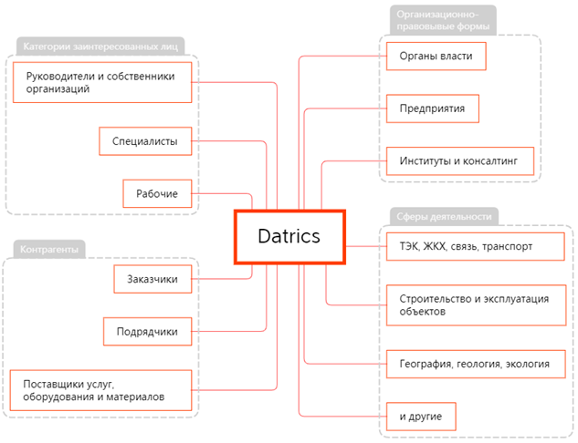
2.1 Создание аккаунта
Для того чтобы создать аккаунт в Системе, необходимо на странице авторизации нажать на кнопку “Создать аккаунт”.
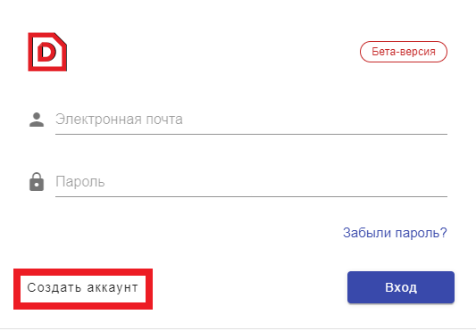
В открывшемся окне следует заполнить требуемую информацию и нажать на кнопку “Регистрация”.
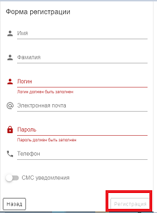
После этого системный администратор получит уведомление о создании нового аккаунта и сможет его активировать. После активации на почту, указанную при регистрации, придёт уведомление о получении доступа к системе, и вход в аккаунт станет возможен.
2.2 Вход в систему
Для того чтобы войти в Систему, необходимо ввести свой логин и пароль, а далее нажать на “Вход”.
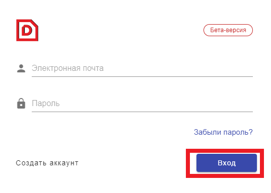
Существует также опция восстановления аккаунта по нажатию на кнопку “Забыли пароль?”.
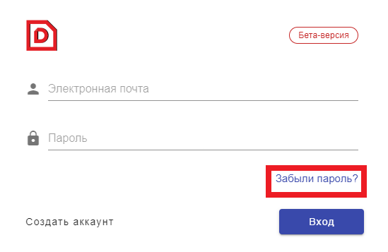
В открывшемся окне следует ввести электронный адрес, на который была зарегистрирована учётная запись, а затем нажать кнопку подтверждения.
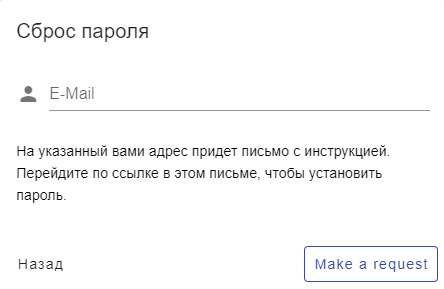
Через некоторое время на указанный адрес придёт сообщение со ссылкой для задания нового пароля.
2.3 Изменение настроек пользователя
Чтобы изменить язык интерфейса, следует нажать на соответствующую иконку на панели навигации. Для выбора доступны английский, русский и испанский языки.
Для изменения настроек учётной записи необходимо нажать на соответствующую иконку на панели навигации в виде аватара пользователя.
В открывшемся окне необходимо нажать на своё имя либо на иконку шестерёнки напротив него, чтобы получить возможность отредактировать что-либо в своей учётной записи.
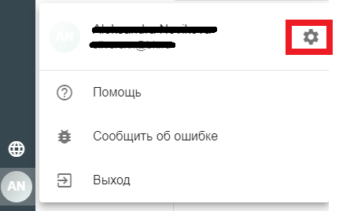
После внесения необходимых изменений, необходимо нажать на кнопку “Сохранить”.
2.4 Выход из системы
Для того чтобы выйти из системы, необходимо нажать на соответствующую иконку на панели навигации в виде аватара пользователя.
В открывшемся окне необходимо нажать на кнопку “Выход”.
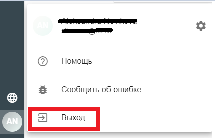
3 Обзор системы
3.1 Главное меню
Панель навигации доступна и одинакова на всех страницах системы, а её элементы более подробно описаны ниже:
Логотип. При нажатии с любой страницы открывается стартовая страница системы.
Поиск по системе. При нажатии открывается форма поиска в виде диалога поверх текущей страницы, что позволяет не терять контекст при работе с приложением. Вызов формы поиска дополнительно предусмотрен с помощью комбинации «ctrl + S» (иконка содержит соответствующую подсказку).
Чаты. При нажатии открывается страница с доступными пользователю чатами. При появлении непрочитанных сообщений в нижнем правом углу иконки становится видным «бейдж» с количеством таких сообщений.
Файлы. При нажатии открывается страница персонального файлового хранилища пользователя.
База знаний. При нажатии открывается страница со статьями, например, в виде блогов.
Компонент для переключения между проектами. Верхняя иконка (три точки) открывает список всех проектов, доступных пользователю. Ниже расположены иконки «Избранных проектов». При нажатии на иконку проекта открывается страница соответствующего ей проекта. Иконка проекта раскрашивается автоматически, за основу берется значение «hash» от названия проекта.
Администрирование. При нажатии открывается страница с инструментами управления доступом и настройками системы.
Аватар пользователя. При нажатии открывается панель управления. Иконка раскрашивается автоматически, за основу берется значение «hash» от полного имени пользователя.
Информация об учётной записи пользователя.
Страница с инструкциями.
Страница обратной связи, предназначенная для систематизации предложений по развитию системы и фиксируемых ошибок в работе.
Выход. По нажатию кнопки завершается сессия пользователя, и происходит переход на страницу авторизации.
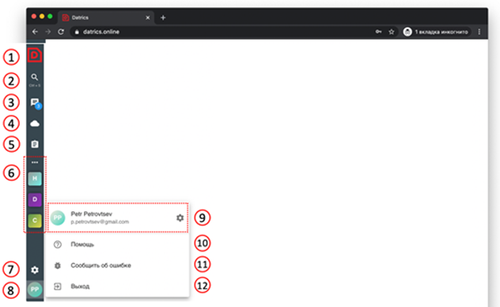
3.2 Роли пользователей
В системе существует три вида ролей - пользователь (User), администратор (Administrator) и системный администратор (System Administrator).
Пользователь регистрируется в системе и, после того как его учётная запись активируется системным администратором, получает доступ к просмотру определённых проектов и категорий, а также к созданию контента в тех проектах, где он назначен модератором.
Администратор, помимо возможностей, доступных обычному пользователю, может создавать новые проекты и приглашать туда других пользователей.
Системный администратор - единственная роль, дающая доступ к управлению системой и к активации аккаунтов. Если пользователь обладает ролью системного администратора, на его панели навигации появляется дополнительная кнопка настроек системы с изображением шестерёнки.
3.3 Системные требования
Графический интерфейс системы является адаптивным - с возможностью работы как со стационарных, так и с мобильных устройств.
4 Раздел «Поиск»
4.1 Общие сведения
Процесс поиска может быть инициирован двумя способами:
нажатием сочетания клавиш Ctrl + S на клавиатуре
кликом по соответствующей иконке с изображением лупы на панели навигации:
При нажатии открывается форма поиска в виде диалога поверх текущей страницы, что позволяет не терять контекст при работе с приложением. Можно выбрать один из двух вариантов поиска – по названию или по содержимому документов.
В зависимости от того, из какого пункта меню был вызван поиск, в рамках этого пункта он и будет производиться.
4.2 Поиск по названию
Чтобы воспользоваться поиском по названию, следует выбрать соответствующий маркер под поисковой строкой.
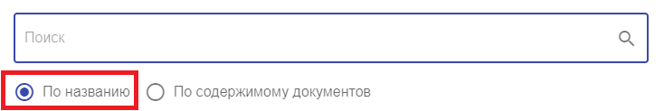
Далее необходимо начать набирать сочетание букв, встречающееся в названии или описании искомой единицы, а затем кликнуть на подходящий вариант в результатах поиска, после чего он будет открыт. Регистр набранного текста не имеет значения.
4.3 Поиск по содержимому документов
Чтобы воспользоваться поиском по содержимому документов, следует выбрать соответствующий маркер под поисковой строкой.
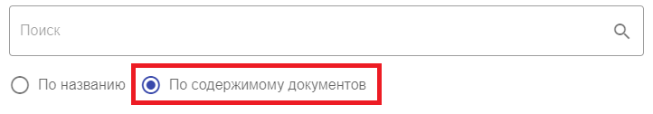
Далее необходимо начать набирать сочетание букв, встречающееся в содержании искомого документа, а затем кликнуть на подходящий вариант в результатах поиска, после чего он будет открыт. Регистр набранного текста не имеет значения.
5 Раздел «Чаты»
5.1 Общие сведения
Чаты используются для публичной и приватной коммуникации пользователей, а также для оповещения пользователей о событиях по проекту. При нажатии на соответствующую иконку с изображением диалогового окна на панели навигации открывается страница с доступными пользователю чатами. При появлении непрочитанных сообщений в нижнем правом углу иконки становится видным «бейдж» с количеством таких сообщений.
5.2 Типы чатов
При открытии вкладки с чатами сверху можно увидеть панель навигации, где можно выбрать необходимый тип чата.
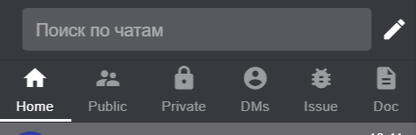
5.2.1 Вкладка «Home»
При открытии чатов, в качестве стартовой дефолтной вкладки будет “Home”, где можно увидеть все доступные для пользователя чаты, вне зависимости от их типа.
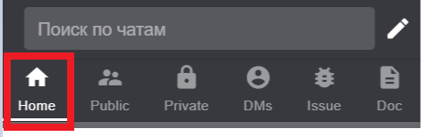
5.2.2 Вкладка «Public»
При открытии вкладки “Public” будут отображаться все публичные чаты, доступные пользователю. Подробнее о публичных чатах можно прочесть в 5.4.1.
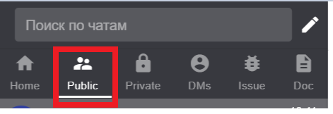
5.2.3 Вкладка «Private»
При открытии вкладки “Private” будут отображаться исключительно приватные чаты, видимые только для создавшего их пользователя и приглашённых им участников. Подробнее о приватных чатах можно прочесть в 5.4.2.
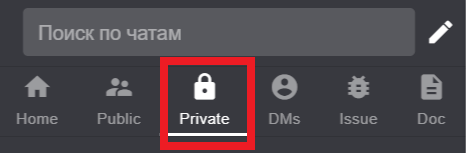
5.2.4 Вкладка «DMs»
При открытии вкладки “DMs” будут отображаться все личные сообщения, отправленные пользователю либо пользователем.
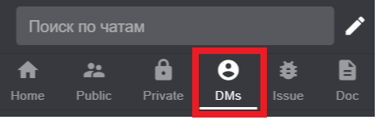
5.2.5 Вкладка «Issue»
При открытии вкладки “Issue” будут отображаться все задачи, к которым имеет отношение пользователь – созданные им, либо те, где он указан как исполнитель.
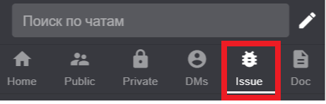
5.2.6 Вкладка «Doc»
При открытии вкладки “Doc” будут отображаться все загруженные пользователем документы.
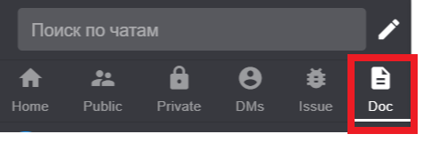
5.3 Поиск по чатам
При открытии чатов сверху находится поисковая строка, с помощью которой можно найти желаемый чат, задачу, пользователя либо документ. Для этого необходимо начать набирать сочетание букв, встречающееся в названии или описании искомой единицы, а затем кликнуть на подходящий вариант в результатах поиска, после чего он будет открыт. Регистр набранного текста не имеет значения.
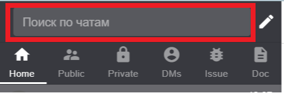
Чтобы выйти из режима поиска, необходимо нажать на крестик справа от поисковой строки.
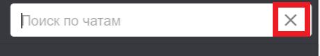
5.4 Создание чата
Для того чтобы создать новый чат, необходимо, зайдя в раздел «Чаты», нажать на изображение карандаша справа от поисковой строки в верхнем правом углу:
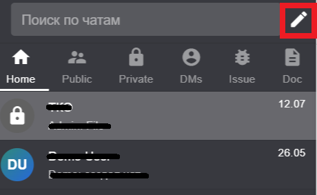
5.4.1 Публичный чат
Публичные чаты являются доступными для всех пользователей. Для того чтобы следить за обновлениями в представляющем интерес чате, в перечне уже существующих доступных чатов нужно выбрать необходимый, открыть его и нажать «Подписаться».
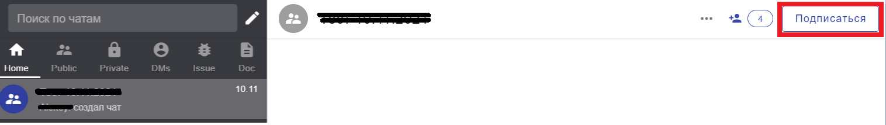
Таким же образом можно отписаться от чата, чтобы отменить своё участие в нём и не получать больше обновлений.
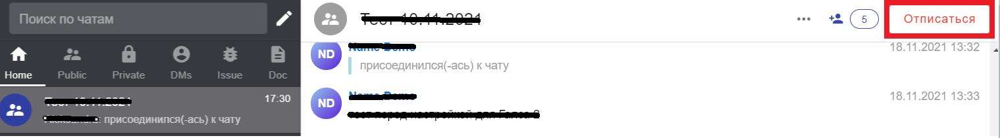
Для создания нового публичного чата после нажатия на кнопку с изображением карандаша следует выбрать вкладку «Публичный», указать название и, при необходимости, описание чата, а также добавить участников, после чего нажать на кнопку «Создать».
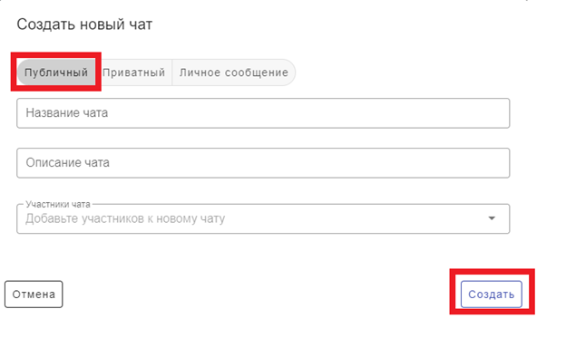
Существует также возможность добавить участников в уже созданный публичный чат. Для этого необходимо открыть нужный чат и нажать на плюс в правом верхнем углу, после чего с помощью поиска найти пользователя(ей) и нажать “Пригласить”.
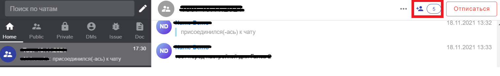
5.4.2 Приватный чат
Приватные чаты являются видимыми только для создавшего их пользователя и приглашённых им участников, поэтому их нельзя обнаружить в списке доступных чатов.
Для того чтобы создать новый приватный чат, после нажатия на кнопку с изображением карандаша необходимо выбрать вкладку “Приватный”, указать название и, при необходимости, описание чата, а также пригласить участников, после чего нажать на “Создать”.
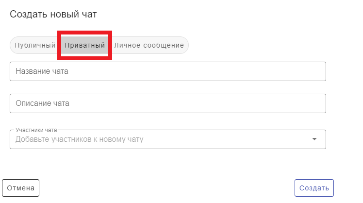
Существует также возможность добавить участников в уже созданный приватный чат. Для этого необходимо открыть нужный чат и нажать на плюс в правом верхнем углу, после чего с помощью поиска найти пользователя(ей) и нажать “Пригласить”.
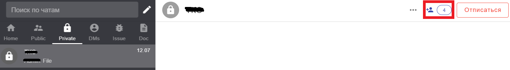
Для того чтобы покинуть приватный чат, следует нажать на “Отписаться” в правом верхнем углу.
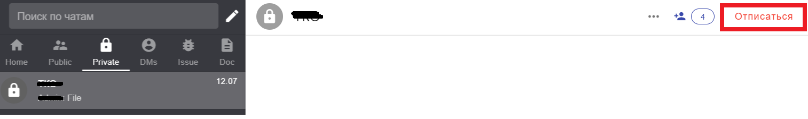
Покинув приватный чат, вернуться в него самостоятельно уже не получится, это будет возможным только по приглашению другого участника.
5.4.3 Изменение типа чата
Данная функция будет реализована и описана позднее.
5.4.4 Личное сообщение
Чтобы написать личное сообщение другому пользователю, необходимо нажать на изображение карандаша в правом верхнем углу, выбрать вкладку “Личное сообщение” и, добавив получателя, нажать на “Создать”.
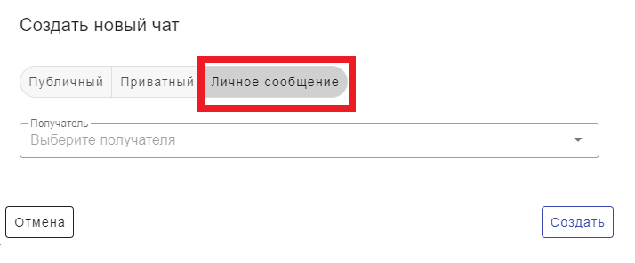
В такой чат нельзя добавлять новых участников равно как и удалять уже добавленных. Он виден только двум пользователям, участвующим в нём.
5.5 Возможные действия
5.5.1 Отправка сообщения
Для того чтобы отправить сообщение в чат, участником которого является пользователь, необходимо набрать желаемый текст в поле ввода и нажать на кнопку отправки в виде треугольника в правом нижнем углу либо на кнопку Enter на клавиатуре.
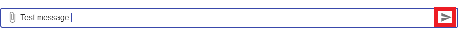
5.5.2 Отправка файла
Для того чтобы прикрепить к сообщению файл, необходимо нажать на кнопку с изображением скрепки слева от поля ввода.

После нажатия на кнопку добавления файла появится возможность выбора - загрузить новый файл или выбрать ранее загруженный файл, находящийся в облаке:
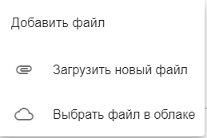
- Для того чтобы загрузить новый файл, следует кликнуть по соответствующей надписи, а затем в открывшемся окне нажать на выделенную область и выбрать необходимый файл на своём компьютере либо просто перетащить его с помощью мышки в выделенную область.
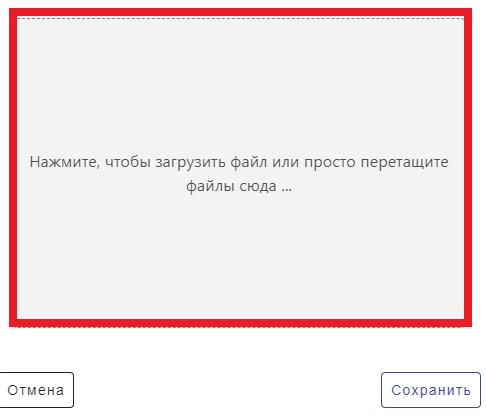
Перед отправкой существует возможность удалить добавленный файл. Для этого надо нажать на крестик справа от него.
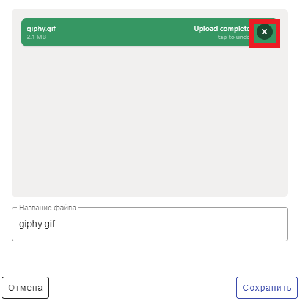
Также перед отправкой можно поменять название файла. Далее следует нажать на “Сохранить” и отправить сообщение.
- Чтобы выбрать уже загруженный файл, нужно кликнуть на надпись “Выбрать файл в облаке”, а затем с помощью поиска найти необходимый файл или выбрать его в списке под поисковой строкой.
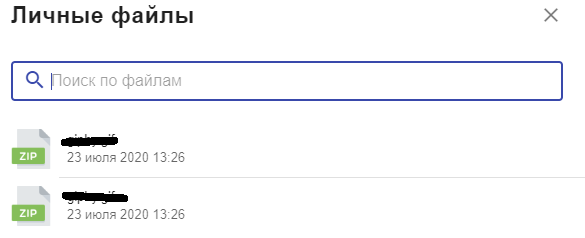
Любой файл, отправленный в чат, можно сохранить на свой компьютер, нажав на соответствующую кнопку:
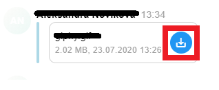
5.5.3 Обзор участников чата
Участников чата можно посмотреть, нажав на кнопку, показывающую количество участников чата, находящуюся в правом верхнем углу:
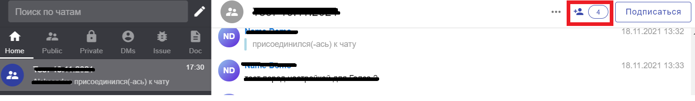
В открывшемся после этого окне можно будет просмотреть список уже добавленных участников, удалить их либо пригласить новых.
5.5.4 Добавление пользователей в чат
Чтобы добавить в чат нового участника, необходимо нажать на плюс в правом верхнем углу, после чего с помощью поиска найти пользователя(ей) и нажать “Пригласить”.
5.5.5 Удаление пользователей из чата
Функция удаления участников из чата доступна только создавшему его пользователю.
Чтобы удалить пользователя из чата, необходимо нажать на плюс в правом верхнем углу, после чего выбрать нужного участника из общего списка и нажать на крестик справа от его имени.
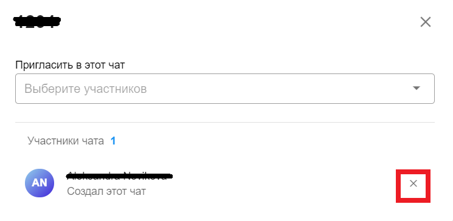
Далее в открывшемся окне следует нажать на кнопку «Подтвердить».
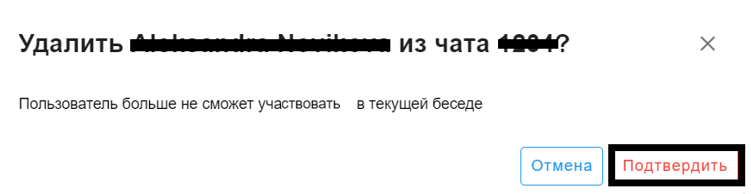
5.5.6 Подписка на чат
Пользователь автоматически становится подписан на созданные им самим чаты, а также на чаты, куда его приглашают.
Есть возможность самостоятельно подписаться на обновления любого публичного чата. Для этого необходимо выбрать нужный чат в списке, открыть его и нажать на “Подписаться” в правом верхнем углу.
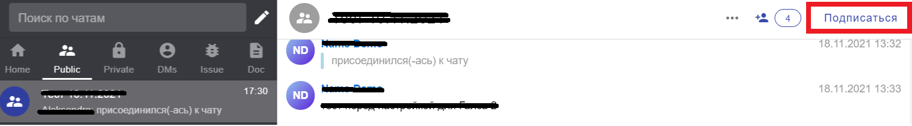
5.5.7 Переименование чата
Функция переименования чата доступна только создавшему его пользователю.
Для того, чтобы переименовать чат, необходимо открыть его, нажать на многоточие в правом верхнем углу и выбрать «Переименовать».
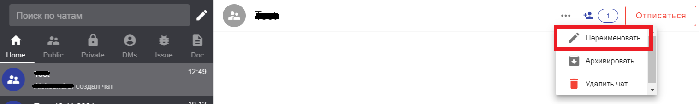
В открывшемся окне необходимо ввести новое название для чата и затем нажать на «Переименовать». Чат будет сохранён под новым именем. Новое название должно быть уникальным, система не даст сохранить уже существующее название чата.
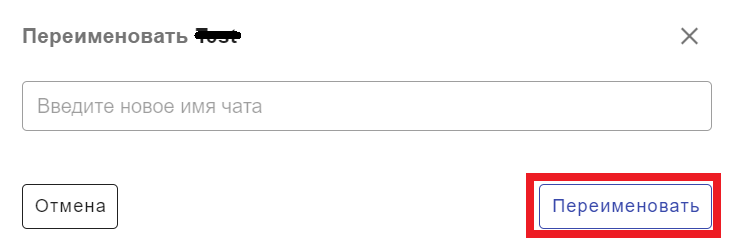
5.5.8 Архивация чата
Функция архивации чата доступна только создавшему его пользователю.
Для того, чтобы архивировать чат, необходимо открыть его, нажать на многоточие в правом верхнем углу и выбрать «Архивировать».
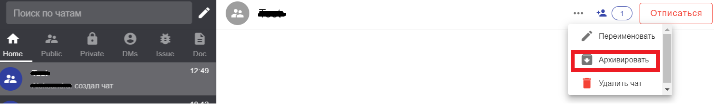
После этого чат будет перемещён в архив и, чтобы открыть его, необходимо нажать на иконку со стрелкой слева от поисковой строки во вкладке с чатами.
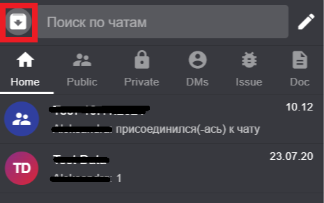
Для того, чтобы разархивировать чат, необходимо открыть его, нажать на многоточие в правом верхнем углу и выбрать «Разархивировать». После этого выбранный чат вернётся в общий список.
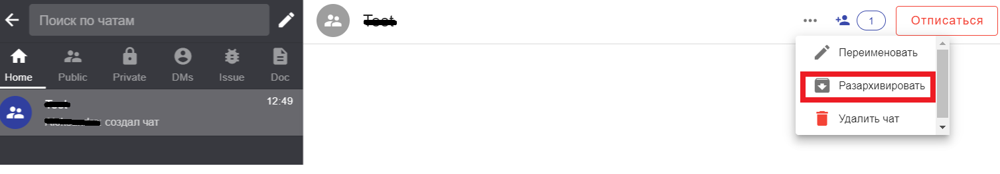
5.5.9 Удаление чата
Функция удаления чата доступна только создавшему его пользователю.
Для того, чтобы удалить чат, необходимо открыть его, нажать на многоточие в правом верхнем углу и выбрать «Удалить чат».
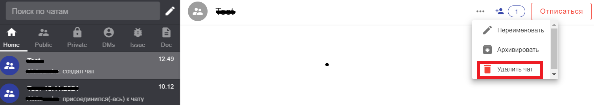
Удалённые чаты не подлежат восстановлению.
6 Раздел «Файлы»
6.1 Общие сведения
“Файлы” представляют собой персональное файловое хранилище пользователя для временного хранения данных без их публикации в проектах.
При нажатии на кнопку с изображением облака на панели навигации открывается страница персонального файлового хранилища пользователя.
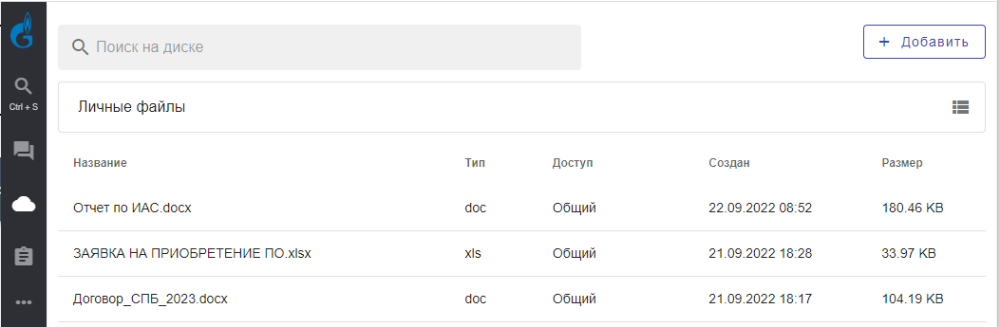
6.2 Добавление файлов
Для того чтобы добавить файл в своё личное хранилище, необходимо нажать на кнопку “Добавить” в правом верхнем углу.
Для того чтобы загрузить новый файл, следует кликнуть по соответствующей надписи, а затем в открывшемся окне нажать на выделенную область и выбрать необходимый файл на своём компьютере либо просто перетащить его с помощью мышки в выделенную область.
Перед отправкой существует возможность удалить добавленный файл. Для этого надо нажать на крестик справа от него.
Также перед отправкой можно поменять название файла. Далее следует нажать на “Сохранить”.
После нажатия на файл, находящийся в личном хранилище, появится опция поделиться им, сохранить его на компьютер либо удалить.
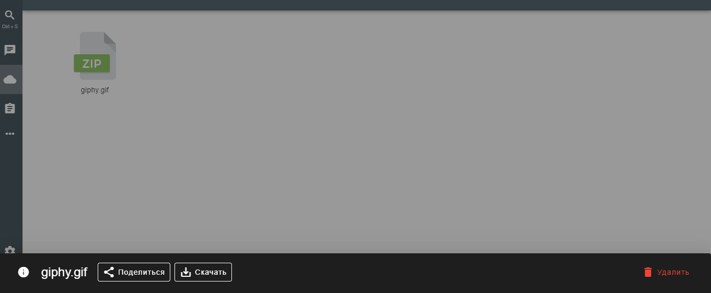
6.3 Удаление файлов
Для того чтобы удалить файл из личного хранилища, следует кликнуть по нему, а затем нажать на “Удалить” в правом нижнем углу.
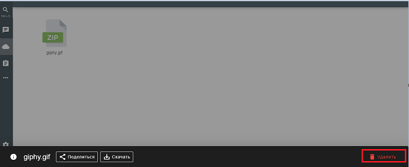
7 Раздел «База знаний»
7.1 Общие сведения
База знаний предоставляет пользователям возможности работы со статьями и блогами команды.
Для того чтобы открыть раздел “База знаний”, необходимо кликнуть на соответствующую иконку на панели навигации:
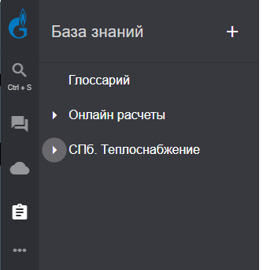
Для просмотра уже существующей статьи необходимо найти её в списке и кликнуть по ней.
7.2 Добавление статьи
Чтобы добавить новую статью, необходимо нажать на кнопку с изображением плюса в правом верхнем углу.
В открывшемся окне необходимо указать заголовок и заполнить текст статьи, после чего нажать на “Сохранить”. Впоследствии добавленную статью можно будет редактировать или удалить.
7.3 Возможные действия
7.3.1 Редактирование статьи
Для того чтобы отредактировать уже существующую статью, надо найти её в списке и открыть, а затем нажать на кнопку с изображением карандаша в правом верхнем углу.
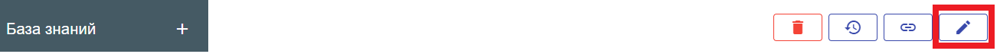
После внесения желаемых изменений следует нажать на кнопку “Сохранить” в правом нижнем углу.
7.3.2 Объединение статей
Для удобства работы с материалом статьи можно связывать между собой. Для того чтобы объединить две статьи, необходимо открыть одну из них и нажать на соответствующую кнопку в правом верхнем углу:
Далее необходимо начать набирать заголовок статьи, которую планируется объединить с данной, найти её в выпадающем списке и выбрать.
7.3.3 Обзор изменений статьи
Для того чтобы отследить какие изменения, кем и когда были произведены в данной статье, необходимо нажать на кнопку с изображением часов в правом верхнем углу:
В открывшемся после нажатия на соответствующую кнопку окне можно будет увидеть порядковый номер версии статьи, название, дату публикации и автора изменений. Также есть возможность сравнить конкретную версию статьи с актуальной, для чего надо нажать на соответствующую надпись:
7.3.4 Удаление статьи
Для того чтобы удалить статью, необходимо найти её в списке существующих статей, открыть и нажать на кнопку с изображением мусорной корзины в правом верхнем углу:
Восстановить статью после её удаления невозможно.
8 Раздел «Проекты»
8.1 Общие сведения
Проект представляет собой конфигурируемый набор, формируемый из относящихся к нему опубликованных данных. Чтобы попасть в раздел “Проекты”, следует кликнуть по иконке с изображением трёх точек на панели навигации.
Данный пункт меню открывает список всех проектов, доступных пользователю.
Чтобы добавить проект в “Избранные проекты”, следует нажать на изображение звёздочки справа от названия проекта. После этого на панели навигации появится соответствующий пункт, после нажатия на который будет открываться соответствующий проект.
8.2 Создание проекта
Создание проекта доступно пользователям, обладающим ролью “Администратор” или “Системный администратор”.
Для того чтобы добавить новый проект, после нажатия на соответствующую иконку с изображением трёх точек на панели навигации следует кликнуть на кнопку “Создать проект” в правом верхнем углу:
Далее необходимо указать название и описание проекта, а затем нажать на кнопку “Сохранить”.
8.3 Работа с проектом: возможные действия
8.3.1 Основное
Вкладка «Основное» позволяет видеть и редактировать основную информацию о проекте, а также обеспечивает быстрый доступ к его участникам, связанным категориям и задачам, для которых пользователь назначен исполнителем.
«Основное» открывается после нажатия на проект на вкладке с проектами либо после нажатия на «Основное» в списке возможных действий относительно какого-либо проекта.
8.3.1.1 Редактирование информации о проекте
При открытии вкладки «Основное» сверху можно увидеть блок с информацией о проекте.
Для того чтобы отредактировать название или описание проекта, необходимо после его открытия нажать на кнопку с изображением карандаша, расположенную справа от названия проекта.
После внесения необходимых корректив в название либо описание проекта, следует нажать на “Сохранить” в правом нижнем углу.
8.3.1.2 Удаление проекта
Для того чтобы удалить проект, необходимо после его открытия нажать на кнопку с изображением мусорной корзины, расположенную справа от названия проекта. После удаления проекта восстановить его невозможно.
8.3.1.3 Обзор пользователей проекта
Во вкладке “Основное” в блоке с основной информацией о проекте находится также раздел, где можно увидеть актуальное количество пользователей и написать кому-то из них личное сообщение.
После нажатия на данную иконку откроется список участников проекта. Рядом с именем каждого из них есть кнопка «Написать», по нажатии на которую откроется чат с этим пользователем.
Добавление пользователей в проект доступно пользователям, обладающим ролью “Администратор” или “Системный администратор”.
Функция будет реализована и описана позднее.
8.3.1.4 Обзор задач пользователя
Под блоком с основной информацией о проекте находится блок «Мои задачи» с задачами, для которых пользователь назначен исполнителем. По дефолту будут отображаться три задачи. Чтобы увидеть больше, можно нажать на кнопку «Показать все» в правом верхнем углу блока. Нажав на эту кнопку, пользователь попадёт во вкладку «Задачи», где будут отображены все задачи данного проекта.
Подробнее о пункте «Задачи» можно прочесть в разделе 8.3.3.
8.3.1.5 Обзор категорий проекта
Категории обеспечивают группировку данных проекта и мониторинг количественных характеристик по его данным.
Для того чтобы отнести данные к определённой(ым) категории(ям), необходимо при публикации любого вида данных указать необходимую(ые) категорию(и) в блоке “Категории” формы публикации.
Категории, к которым относится определённый проект, можно увидеть после нажатия на вкладку “Основное” под блоком с задачами пользователя.
По нажатии на одну из категорий откроется список всех файлов проекта, которым была присвоена данная категория. После открытия категорию можно отредактировать либо удалить.
8.3.1.6 Изменение категорий
Для того чтобы отредактировать информацию о категории, необходимо нажать на изображение карандаша справа от её названия.
В открывшемся окне можно изменить название, тип и описание категории, а затем нажать на «Сохранить».
8.3.1.7 Удаление категорий
Для того чтобы удалить категорию, необходимо нажать на изображение мусорной корзины справа от её названия.
Удалённые категории не подлежат восстановлению.
8.3.1.8 Создание категорий
Создание категорий доступно пользователям, обладающим ролью “Администратор” или “Системный администратор”.
Для того чтобы добавить новую категорию, необходимо после открытия вкладки “Основное” нажать на кнопку с изображением плюса “Добавить” в блоке “Категории”.
Далее следует заполнить форму публикации категории - добавить заголовок, тип и содержание категории, а затем нажать “Сохранить”.

8.3.2 Дашборд
Дашборд - это панель приборов, которая используется для онлайн мониторинга и обеспечивает быстрый доступ к ключевым показателям проекта, процессам и сгруппированным данным по проекту.
Дашборд открывается после нажатия на вкладку “Дашборд” на панели навигации.
8.3.2.1 Виджеты
Раздел “Виджеты” представляет собой конфигуратор виджетов из различных видов данных, представленных в системе с целью онлайн-мониторинга ключевых показателей проекта, а также работы с данными, вынесенными в виджеты.
Для того чтобы добавить виджеты, необходимо после открытия вкладки “Дашборд” нажать на кнопку “Добавить виджет” в правом верхнем углу напротив названия раздела.
Далее в открывшемся окне необходимо выбрать тип виджета из четырёх возможных: карта, циферблат, график или таблица, и указать источник данных, после чего следует нажать на кнопку “Сохранить”.
Добавленный виджет будет отображаться во вкладке “Дашборд” под названием проекта.
После добавления виджета, помимо возможности добавить ещё один, появится также опция редактирования уже добавленных. Для этого надо нажать на кнопку “Изменить” в правом верхнем углу напротив названия проекта.
После нажатия на кнопку “Изменить” появится возможность удалить любой из добавленных виджетов путём нажатия на крестик в правом верхнем углу виджета.
По завершению редактирования панели виджетов необходимо нажать на кнопку “Сохранить” в правом верхнем углу для сохранения внесённых изменений.
8.3.3 Задачи
Раздел “Задачи” позволяет обеспечивать планирование и контроль рабочих процессов, фиксацию любых событий, касающихся выполнения процессов, а также визуализацию состояния готовности задач и ответственных пользователей.
Чтобы попасть в раздел “Задачи”, необходимо сначала открыть желаемый проект, а затем кликнуть по надписи “Задачи” в перечне возможных действий на панели навигации.
8.3.3.1 Обзор задачи
По нажатию на вкладку “Задачи” на панели навигации открывается таблица со всеми существующими задачами, относящимися к данному проекту.
Задачи в таблице могут быть отсортированы различным образом:
- По категории
Нажав на поле “Категории”, можно отметить те категории, связанные с которыми задачи будут отображаться. Может быть выбрана более чем одна категория.
- По исполнителю
Нажав на поле “Исполнитель”, можно отметить тех исполнителей, назначенные на которых задачи будут отображаться. Может быть выбран более чем один исполнитель.
- По статусу
Нажав на поле “Статус”, можно отметить те статусы, задачи, находящиеся в которых, будут отображаться (бэклог, открыта, в работе, выполнена). Может быть выбран более чем один статус.
- По названию / по дате
Нажав на поле “Сортировка”, можно выбрать различные варианты сортировки задач по возрастанию либо по убыванию, по названию либо по дате.
- Сортировка по убыванию (по дате)
- Сортировка по возрастанию (по дате)
- Сортировка по убыванию (по названию)
- Сортировка по возрастанию (по названию)
8.3.3.2 Редактирование задачи
Для того чтобы отредактировать существующую задачу, необходимо найти её в списке путём скроллинга или при помощи поисковой строки и открыть.
После открытия задачи сохраняется возможность переключения между ними посредством клика на название задачи в списке доступных задач в левом верхнем углу.
8.3.2.2.1 Возможные действия
В блоке “Информация” доступны следующие действия:
- Нажав на кнопку “Выполнено”, задача получит статус “Выполнена”.
Если задача уже находится в статусе “Выполнена”, её можно переоткрыть, нажав на кнопку “Переоткрыть”, после этого она будет сохранена в статусе “Открыта”, и соответствующая запись появится в истории.
- Поделиться задачей. После нажатия на кнопку с тремя точками в правом > верхнем углу блока “Информация” есть возможность нажать на кнопку > “Поделиться”.
По нажатию на кнопку “Поделиться” откроется окно, содержащее ссылку на данную задачу, кликнув на иконку справа от которой, эту ссылку можно скопировать.
- Удалить задачу. После нажатия на кнопку с тремя точками в правом > верхнем углу блока “Информация” есть возможность нажать на кнопку > “Удалить”. По нажатию на эту кнопку данная задача полностью > удалится из списка, и восстановить её уже не будет возможности.
- По нажатию на поле “Название” появится возможность его > отредактировать:
- По нажатию на поле “Статус” появится возможность выбрать и > установить один из четырёх возможных статусов: “Бэклог”, > “Открыта”, “В работе” или “Выполнена”.

- По нажатию на поле “Исполнитель” появится возможность назначить > исполнителя для соответствующей задачи из списка пользователей, > добавленных в данный проект.
Если задаче уже присвоен какой-либо исполнитель, можно переназначить её на себя, нажав на соответствующую надпись.
- По нажатию на поле “Дата завершения” появится возможность выбрать > желаемую дату завершения данной задачи.
- По нажатию на поле “Категории” появится возможность добавить/удалить > категории для данной задачи путём добавления/удаления галочки > рядом с названием категории.
В основном блоке информации о задаче есть возможность:
- отредактировать описание задачи, нажав на него
- посмотреть дату и время создания задачи
- посмотреть историю действий, связанных с данной задачей
- добавить комментарий к данной задаче
8.3.3.3 Поиск задачи
С помощью поиска в левом верхнем углу можно быстро найти необходимую задачу, начав набирать её название.
8.3.3.4 Создание задачи
Создание задач доступно пользователям с любой ролью.
Для того чтобы создать новую задачу, необходимо кликнуть по вкладке “Задачи” на панели навигации и нажать на кнопку “Создать” в правом верхнем углу.
В открывшемся окне необходимо ввести название задачи, выбрать дату завершения, назначить исполнителя, добавить категории и описание задачи. Описание может быть представлено в виде текста, списка, чеклиста или таблицы, либо объединения каких-либо из вышеперечисленных вариантов. После заполнения всех необходимых полей следует нажать на кнопку “Сохранить” в правом нижнем углу, после чего задача появится в списке доступных задач по данному проекту.

8.3.4 Отчёты
Раздел “Отчёты” - это конфигуратор справок и пояснительных записок в виде листовок, плакатов, брошюр, собираемых на основе данных, опубликованных в системе, который позволяет обеспечить создание обновляемых отчётов и переход к интерактивной работе с содержанием отчёта.
Чтобы попасть в раздел “Отчёты”, необходимо сначала открыть желаемый проект, а затем кликнуть по надписи “Отчёты” в перечне возможных действий на панели навигации.
8.3.4.1 Обзор отчёта
По нажатию на вкладку “Отчёты” на панели навигации открывается таблица со всеми существующими отчётами, относящимися к данному проекту.
Отчёты в таблице могут быть отсортированы различным образом:
- По категории
Нажав на поле “Категории”, можно отметить те категории, связанные с которыми отчёты будут отображаться. Может быть выбрана более чем одна категория.
- По ключевым словам
Нажав на поле “Ключевые слова”, можно отметить те ключевые слова, содержащие которые отчёты будут отображаться. Может быть выбрано более чем одно ключевое слово.
- По источнику данных
Нажав на поле “Источник данных”, можно отметить те источники данных, связанные с которыми отчёты будут отображаться. Может быть выбран более чем один источник данных.

- По названию / по дате
Нажав на поле “Сортировка”, можно выбрать различные варианты сортировки отчётов по возрастанию либо по убыванию, по названию либо по дате.
- Сортировка по убыванию (по дате)
- Сортировка по возрастанию (по дате)
- Сортировка по убыванию (по названию)
- Сортировка по возрастанию (по названию)
8.3.4.2 Редактирование отчёта
Для того чтобы отредактировать существующий отчёт, необходимо найти его в списке путём скроллинга или при помощи поисковой строки и открыть. После открытия отчёта сохраняется возможность переключения между ними посредством клика на название отчёта в списке доступных отчётов в левом верхнем углу.
8.3.4.2.1 Возможные действия
В блоке “Информация” доступны следующие действия:
- изменить описание отчёта - для этого необходимо кликнуть на кнопку с изображением трёх точек, а затем нажать на “Изменить”.
В открывшемся окне появится возможность отредактировать название отчёта, его описание, источник данных, ключевые слова, языки и категории. По окончанию внесения корректив следует нажать на кнопку “Сохранить”.
- поделиться отчётом - для этого необходимо кликнуть на кнопку с изображением трёх точек, а затем нажать на “Поделиться”.
По нажатию на кнопку “Поделиться” откроется окно, содержащее ссылку на данный отчёт, кликнув на иконку справа от которой, эту ссылку можно скопировать.
- экспорт - чтобы произвести экспорт данного отчёта, необходимо кликнуть на кнопку с изображением трёх точек, а затем нажать на “Экспорт”.
Далее необходимо выбрать один из двух доступных форматов - pdf или docx, после чего файл будет сохранён на компьютере в выбранном формате.
- удалить отчёт
- просмотреть информацию об отчёте, нажав на кнопку «Информация» в правом верхнем углу.
Здесь можно увидеть источник данных (1), создателя отчёта (2), доступные языки (3), ключевые слова (4), категории (5) и связанные данные (6):
- добавить связанные данные - для этого необходимо кликнуть на “Добавить” и выбрать необходимый файл.
Для того чтобы удалить связанный файл, необходимо нажать на иконку с мусорной корзиной напротив него.
- посмотреть комментарии / отправить комментарий – слева в блоке «Информация» пользователю доступен раздел комментариев, где можно просмотреть оставленные ранее комментарии и добавить новые.
Для того чтобы отправить комментарий, необходимо ввести желаемое сообщение в текстовое поле и нажать на треугольник справа от него либо на клавишу “Enter” на клавиатуре.
В основном блоке информации об отчёте доступны следующие действия:
- разделить экран - для этого необходимо нажать на соответствующую иконку в правом верхнем углу, после чего в появившемся окне предоставится возможность нажать на плюс и открыть параллельно ещё один документ.
- развернуть на весь экран - для этого необходимо нажать на соответствующую иконку в правом верхнем углу.
Чтобы выйти из полноэкранного режима, следует нажать на кнопку “Свернуть”.
- закрыть - для того чтобы закрыть данный отчёт, необходимо нажать на крестик в правом верхнем углу.
- редактировать данный отчёт - для этого необходимо нажать на кнопку “Изменить” в правом верхнем углу.
После внесения всех желаемых изменений необходимо нажать на кнопку “Сохранить” в правом верхнем углу. Также можно нажать на “Отмена” в левом верхнем углу, чтобы выйти из режима редактирования без сохранения изменений.
8.3.4.3 Поиск отчёта
С помощью поиска в левом верхнем углу можно быстро найти необходимый отчёт, начав набирать его название.

8.3.4.4 Создание отчёта
Создание отчётов доступно пользователям, обладающим ролью “Администратор” или “Системный администратор”, либо пользователям, отмеченным как “Модератор” для данного проекта.
Для того чтобы создать новый отчёт, необходимо кликнуть по вкладке “Отчёты” на панели навигации и нажать на кнопку “Создать” в правом верхнем углу.
В открывшемся окне необходимо ввести название отчёта, выбрать источник данных, добавить описание, ключевые слова, языки и категории. Справа находится поле для добавления отчёта. После заполнения всех необходимых полей следует нажать на кнопку “Сохранить” в правом нижнем углу, после чего отчёт появится в списке доступных отчётов по данному проекту.
8.3.5 Документы
Раздел “Документы” позволяет обеспечивать отображение электронных документов, отслеживать версионность, скачивать информацию и работать с ней. Поддерживаемые форматы: MS Word (DOC; DOCX) и HTML.
Чтобы попасть в раздел “Документы”, необходимо сначала открыть желаемый проект, а затем кликнуть по надписи “Документы” в перечне возможных действий на панели навигации.
8.3.5.1 Обзор документа
По нажатию на вкладку “Документы” на панели навигации открывается таблица со всеми существующими документами, относящимися к данному проекту.
Документы в таблице могут быть отсортированы различным образом:
- По категории
Нажав на поле “Категории”, можно отметить те категории, связанные с которыми документы будут отображаться. Может быть выбрана более чем одна категория.
- По ключевым словам
Нажав на поле “Ключевые слова”, можно отметить те ключевые слова, содержащие которые документы будут отображаться. Может быть выбрано более чем одно ключевое слово.

- По источнику данных
Нажав на поле “Источник данных”, можно отметить те источники данных, связанные с которыми документы будут отображаться. Может быть выбран более чем один источник данных.
- По названию / по дате
Нажав на поле “Сортировка”, можно выбрать различные варианты сортировки документов по возрастанию либо по убыванию, по названию либо по дате.
- Сортировка по убыванию (по дате)
- Сортировка по возрастанию (по дате)
- Сортировка по убыванию (по названию)
- Сортировка по возрастанию (по названию)
8.3.5.2 Редактирование документа
Для того чтобы отредактировать существующий документ, необходимо найти его в списке путём скроллинга или при помощи поисковой строки и открыть. После открытия документа сохраняется возможность переключения между ними посредством клика на название документа в списке доступных документов в левом верхнем углу.
8.3.5.2.1 Возможные действия
В блоке “Информация” доступны следующие действия:
- постраничный просмотр содержимого документа – для этого необходимо нажать на иконку с изображением горизонтальных линий:
- просмотр истории изменений документа - для этого необходимо нажать на иконку с изображением часов:
В открывшемся списке можно как просмотреть более ранние версии данного документа, так и удалить их, нажав на иконку с мусорной корзиной напротив названия версии. Также есть возможность добавить другие версии и сравнить их посредством нажатия на соответствующие кнопки.
- просмотр и добавление комментариев - по нажатию на соответствующую кнопку откроется раздел комментариев, где можно будет просмотреть оставленные ранее комментарии и добавить новые.

Для того чтобы отправить комментарий, необходимо ввести желаемое сообщение в текстовое поле и нажать на треугольник справа от него либо на клавишу “Enter” на клавиатуре.
- скачать документ - чтобы сохранить данный документ на свой компьютер, необходимо кликнуть на кнопку с изображением трёх точек, а затем нажать на “Скачать”
- изменить информацию о документе - для этого необходимо нажать на кнопку с изображением трёх точек, а затем выбрать “Изменить”.
В открывшемся окне появится возможность отредактировать название документа, его описание, источник данных, ключевые слова, языки и категории. По окончанию внесения корректив следует нажать на кнопку “Сохранить”.
- поделиться документом - для этого необходимо кликнуть на кнопку с изображением трёх точек, а затем нажать на “Поделиться”.
По нажатию на кнопку “Поделиться” откроется окно, содержащее ссылку на данный отчёт, кликнув на иконку справа от которой, эту ссылку можно скопировать.
- удалить документ – для этого необходимо нажать на кнопку с изображением трёх точек, а затем выбрать «Удалить»
- просмотреть общую информацию о документе: описание (1), источник данных (2), создателя документа (3), доступные языки (4), ключевые слова (5), категории (6) и связанные данные (7)
Чтобы добавить связанные данные, необходимо нажать на изображение плюса с надписью “Добавить” и выбрать необходимый файл.
Для того чтобы удалить связанный файл, необходимо нажать на иконку с мусорной корзиной напротив него.
В основном блоке информации о документе доступны следующие действия:
- разделить экран - для этого необходимо нажать на соответствующую иконку в правом верхнем углу, после чего в появившемся окне предоставится возможность нажать на плюс и открыть параллельно ещё один документ.
- развернуть на весь экран - для этого необходимо нажать на соответствующую иконку в правом верхнем углу.
Чтобы выйти из полноэкранного режима, следует нажать на кнопку “Свернуть”.
- закрыть - для того чтобы закрыть данный документ, необходимо нажать на крестик в правом верхнем углу.

8.3.5.3 Поиск документа
С помощью поиска в левом верхнем углу можно быстро найти необходимый документ, начав набирать его название.
8.3.5.4 Создание документа
Создание документов доступно пользователям, обладающим ролью “Администратор” или “Системный администратор”, либо пользователям, отмеченным как “Модератор” для данного проекта.
Для того чтобы создать новый документ, необходимо кликнуть по вкладке “Документы” на панели навигации и нажать на кнопку “Создать” в правом верхнем углу.
В открывшемся окне необходимо ввести название документа, добавить источник данных, описание, ключевые слова, языки и категории. В блоке справа есть поле, добавить файл куда можно, перетащив туда необходимый документ либо нажав на него. После добавления документа и заполнения всех необходимых полей следует нажать на “Сохранить”. После этого документ появится в списке всех документов, доступных для данного проекта.
8.3.6 Таблицы
Раздел “Таблицы” позволяет обеспечивать отображение интерактивных таблиц, построение графиков, их отображение и сохранение, выполнение запросов выборок данных в виде фильтров и скачивание информации. Поддерживаемые форматы: MS Excel (XLS; XLSX) и CSV.
Чтобы попасть в раздел “Таблицы”, необходимо сначала открыть желаемый проект, а затем кликнуть по надписи “Таблицы” в перечне возможных действий на панели навигации.
8.3.6.1 Обзор таблицы
По нажатию на вкладку “Таблицы” на панели навигации открывается таблица со всеми существующими таблицами, относящимися к данному проекту.
Таблицы могут быть отсортированы различным образом:
- По категории
Нажав на поле “Категории”, можно отметить те категории, связанные с которыми таблицы будут отображаться. Может быть выбрана более чем одна категория.

- По ключевым словам
Нажав на поле “Ключевые слова”, можно отметить те ключевые слова, содержащие которые таблицы будут отображаться. Может быть выбрано более чем одно ключевое слово.
- По источнику данных
Нажав на поле “Источник данных”, можно отметить те источники данных, связанные с которыми таблицы будут отображаться. Может быть выбран более чем один источник данных.
- По названию / по дате
Нажав на поле “Сортировка”, можно выбрать различные варианты сортировки таблиц по возрастанию либо по убыванию, по названию либо по дате.

- Сортировка по убыванию (по дате)
- Сортировка по возрастанию (по дате)
- Сортировка по убыванию (по названию)
- Сортировка по возрастанию (по названию)
8.3.6.2 Редактирование таблицы
Для того чтобы отредактировать существующую таблицу, необходимо найти её в списке путём скроллинга или при помощи поисковой строки и открыть. После открытия таблицы сохраняется возможность переключения между ними посредством клика на название таблицы в списке доступных таблиц в левом верхнем углу.
8.3.6.2.1 Возможные действия
В блоке “Информация” доступны следующие действия:
- изменить описание таблицы - для этого необходимо кликнуть на кнопку с изображением трёх точек, а затем нажать на “Изменить”.
В открывшемся окне появится возможность отредактировать название таблицы, её описание, источник данных, ключевые слова, языки и категории. По окончанию внесения корректив следует нажать на кнопку “Сохранить”.
- поделиться таблицей - для этого необходимо кликнуть на кнопку с изображением трёх точек, а затем нажать на “Поделиться”.
По нажатию на кнопку “Поделиться” откроется окно, содержащее ссылку на данную таблицу, кликнув на иконку справа от которой, эту ссылку можно скопировать.
- посмотреть источник данных
- посмотреть создателя
- удалить таблицу
- посмотреть связанные данные
- добавить связанные данные - для этого необходимо кликнуть на желаемый тип связанных данных, а затем нажать на “Добавить” и выбрать необходимый файл.
Для того чтобы удалить связанный файл, необходимо нажать на иконку с мусорной корзиной напротив него.

- посмотреть комментарии / оставить комментарий - по нажатию на соответствующую кнопку откроется раздел комментариев, где можно будет просмотреть оставленные ранее комментарии и добавить новые.
Для того чтобы отправить комментарий, необходимо ввести желаемое сообщение в текстовое поле и нажать на треугольник справа от него либо на клавишу “Enter” на клавиатуре.
В основном блоке информации о таблице доступны следующие действия:
- разделить экран - для этого необходимо нажать на соответствующую иконку в правом верхнем углу, после чего в появившемся окне предоставится возможность нажать на плюс и открыть параллельно ещё один документ.
- развернуть на весь экран - для этого необходимо нажать на соответствующую иконку в правом верхнем углу.
Чтобы выйти из полноэкранного режима, следует нажать на кнопку “Свернуть”.
- закрыть - для того чтобы закрыть данную таблицу, необходимо нажать на крестик в правом верхнем углу.
- добавить диаграмму - для этого необходимо нажать на соответствующую кнопку “Добавить диаграмму”.

Далее необходимо выбрать данные, на основании которых будет строиться диаграмма, заполнить описание и нажать на кнопку “Сохранить”. Созданная диаграмма сохранится в разделе “Графики”.
8.3.6.3 Поиск таблицы
С помощью поиска в левом верхнем углу можно быстро найти необходимую таблицу, начав набирать её название.
8.3.6.4 Создание таблицы
Создание таблиц доступно пользователям, обладающим ролью “Администратор” или “Системный администратор”, либо пользователям, отмеченным как “Модератор” для данного проекта.
Для того чтобы создать новую таблицу, необходимо кликнуть по вкладке “Таблицы” на панели навигации и нажать на кнопку “Создать” в правом верхнем углу.
В открывшемся окне необходимо ввести название таблицы, добавить источник данных, описание, ключевые слова, языки и категории. В блоке справа есть поле, добавить файл куда можно, перетащив туда необходимый документ либо нажав на него. После добавления файла и заполнения всех необходимых полей следует нажать на “Сохранить”. После этого таблица появится в списке всех таблиц, доступных для данного проекта.
8.3.7 Карты
Раздел “Карты” позволяет обеспечивать визуализацию отображаемой на карте информации, поиск информации на карте, создание пространственных объектов и выполнение пространственного анализа (получение координат точек, геометрические вычисления и т.д.) на карте. Поддерживаемые форматы: OGC (WFS; WMS) и ZuluGIS (ZWS).
Чтобы попасть в раздел “Карты”, необходимо сначала открыть желаемый проект, а затем кликнуть по надписи “Карты” в перечне возможных действий на панели навигации.
8.3.7.1 Обзор карты
По нажатию на вкладку “Карты” на панели навигации открывается таблица со всеми существующими картами, относящимися к данному проекту.
Карты могут быть отсортированы различным образом:
- По категории
Нажав на поле “Категории”, можно отметить те категории, связанные с которыми карты будут отображаться. Может быть выбрана более чем одна категория.
- По ключевым словам
Нажав на поле “Ключевые слова”, можно отметить те ключевые слова, содержащие которые карты будут отображаться. Может быть выбрано более чем одно ключевое слово.
- По источнику данных
Нажав на поле “Источник данных”, можно отметить те источники данных, связанные с которыми карты будут отображаться. Может быть выбран более чем один источник данных.
- По названию / по дате
Нажав на поле “Сортировка”, можно выбрать различные варианты сортировки карт по возрастанию либо по убыванию, по названию либо по дате.
- Сортировка по убыванию (по дате)
- Сортировка по возрастанию (по дате)
- Сортировка по убыванию (по названию)
- Сортировка по возрастанию (по названию)
8.3.7.2 Редактирование карты
Для того чтобы отредактировать существующую карту, необходимо найти её в списке путём скроллинга или при помощи поисковой строки и открыть. После открытия карты сохраняется возможность переключения между ними посредством клика на название карты в списке доступных карт в левом верхнем углу.

8.3.7.2.1 Возможные действия
В блоке “Информация” доступны следующие действия:
- просмотр добавленных слоев
- изменить порядок расположения слоев – для этого необходимо кликнуть мышью по иконке с точками слева от названия слоя и, удерживая левую кнопку мыши нажатой, передвинуть выбранный слой на желаемую позицию в списке
- включить / отключить видимость слоя – для этого необходимо нажать на иконку с изображением глаза слева от названия слоя
- добавить слои - чтобы добавить новый слой, необходимо нажать на плюс напротив заголовка “Слои”
В открывшемся окне необходимо указать источник данных и нажать на “Сохранить”.
- открыть меню настроек слоя – для этого необходимо нажать на соответствующее изображение справа от названия слоя
- для слоев типа “Layer POI” реализована возможность настройки визуального представления объектов карте – чтобы перейти в раздел настройки нажмите на соответствующую иконку шаблона объекта.
В открывшемся диалоге вы можете настроить цвета, иконки и толщину границы для выбранного типа объекта.
- сохранить - добавив и отредактировав желаемые слои, можно нажать на кнопку “Сохранить” - полученная карта сохранится в разделе “Карты” вместо текущей
- сохранить как новую карту - добавив и отредактировав желаемые слои, можно нажать на кнопку “Сохранить как” - полученная карта сохранится в разделе “Карты” наряду с текущей как новый объект
В открывшемся окне необходимо ввести актуальные сведения о созданной карте и нажать на «Сохранить».
- поиск по карте – для того чтобы воспользоваться поиском по карте, необходимо нажать на изображение лупы в блоке «Информация», выбрать желаемый тип поиска (по объектам, по адресу либо по слою), а затем ввести искомое значение и кликнуть на «Поиск». Внизу появятся результаты, совпадающие с введенными символами. Регистр набранного текста не имеет значения.
По нажатию на один из результатов поиска, он будет отображен на карте:
В режиме поиска по объекту после этого пользователю становятся доступны следующие действия:
- изменить тип объекта
- сообщить о проблеме
В открывшемся окне можно добавить задачу – вписать название проблемы, ее описание, дату завершения, категории, назначить исполнителя и нажать на «Сохранить»:
- поделиться объектом
После нажатия на соответствующую иконку откроется окно, содержащее ссылку на данный объект, кликнув на иконку справа от которой, эту ссылку можно скопировать: 
- удалить объект
- просмотреть / изменить детальное описание объекта
- просмотреть связанные с данным объекты и связать с другими – после нажатия на «Просмотр» в левом верхнем углу можно увидеть связанные объекты, нажатие на кнопку «Связать» позволит связать объект с другими, уже существующими
- добавить новый связанный с данным объект – нажатие на кнопку «Создать» позволит создать новый связанный с данным объект
В режиме поиска по слою помимо поиска по названию доступен также поиск по ID.
- просмотреть информацию о типах объектов, содержащихся на слоях данной карты:
- просмотреть / добавить комментарии - по нажатию на соответствующую кнопку откроется раздел комментариев, где можно будет просмотреть оставленные ранее комментарии и добавить новые
Для того чтобы отправить комментарий, необходимо ввести желаемое сообщение в текстовое поле и нажать на треугольник справа от него либо на клавишу “Enter” на клавиатуре.
- скачать карту - для этого необходимо кликнуть на кнопку с изображением трёх точек, а затем нажать на “Скачать”
- изменить информацию о карте - для этого необходимо кликнуть на кнопку с изображением трёх точек, а затем нажать на «Изменить»:
- поделиться картой - для этого необходимо кликнуть на кнопку с изображением трёх точек, а затем нажать на «Поделиться»:
По нажатию на кнопку “Поделиться” откроется окно, содержащее ссылку на данную карту, кликнув на иконку справа от которой, эту ссылку можно скопировать.
- удалить карту - для этого необходимо кликнуть на кнопку с изображением трёх точек, а затем нажать на «Удалить»:
- просмотреть общую информацию о карте:
В открывшемся окне можно увидеть описание (1), источник данных (2), создатель (3), языки (4), ключевые слова (5), категории (6) и связанные данные (7):
Для того чтобы добавить связанные данные, необходимо кликнуть на “Добавить” и выбрать необходимый файл.
Для того чтобы удалить связанный файл, необходимо нажать на иконку с мусорной корзиной напротив него.
В основном блоке информации о карте доступны следующие действия:
- разделить экран - для этого необходимо нажать на соответствующую иконку в правом верхнем углу, после чего в появившемся окне предоставится возможность нажать на плюс и открыть параллельно ещё один документ.

- развернуть на весь экран - для этого необходимо нажать на соответствующую иконку в правом верхнем углу.
Чтобы выйти из полноэкранного режима, следует нажать на кнопку “Свернуть”.
- закрыть - для того чтобы закрыть данную карту, необходимо нажать на крестик в правом верхнем углу.
- добавить определенный тип объекта на карту – это действие возможно совершить двумя разными способами: либо кликнуть правой кнопкой мыши по карте и выбрать во всплывшем меню «Создать объект»:
...либо нажать на кнопку с тремя горизонтальными полосами в левом нижнем углу карты, а затем выбрать соответствующую иконку:
→
После этого необходимо выбрать желаемый тип объекта, указать его расположение на карте и нажать на «Сохранить» в правом верхнем углу:
- измерить площадь на карте - для этого необходимо нажать на кнопку с тремя горизонтальными полосами в левом нижнем углу карты, а затем выбрать соответствующую иконку

После этого надо выделить желаемую область на карте, и на экране отобразится её площадь:
- измерить расстояние на карте - для этого необходимо нажать на кнопку с тремя горизонтальными полосами в левом нижнем углу карты, а затем выбрать соответствующую иконку
Далее необходимо поставить точку на карте и провести линию до конечной точки, на экране отобразится выделенное расстояние:
- выделить объект и узнать, что это за объект – для этого необходимо кликнуть по желаемому объекту на карте правой кнопкой мыши и выбрать «Что здесь?»
Выбранный объект будет подсвечен на карте, а внизу карты появится его описание:
- переключиться в режим панорамы – для этого необходимо кликнуть по карте правой кнопкой мыши и выбрать «Панорама»
После этого откроется панорама выбранного места на Яндекс.Картах:
8.3.7.3 Поиск карты
С помощью поиска в левом верхнем углу можно быстро найти необходимую карту, начав набирать её название.
8.3.7.4 Создание карты
Создание карт доступно пользователям, обладающим ролью “Администратор” или “Системный администратор”, либо пользователям, отмеченным как “Модератор” для данного проекта.
Для того чтобы создать новую карту на основании определённых слоёв, необходимо кликнуть по вкладке “Слои” на панели навигации, отметить галочками нужные слои и нажать “Построить карту”.
Далее откроется окно, где можно будет отредактировать слои, их расположение и видимость. После внесения всех необходимых корректив следует нажать на “Создать карту”.
В открывшемся окне необходимо ввести название карты, добавить источник данных, описание, ключевые слова, языки и категории, а затем нажать на кнопку “Сохранить”. После этого карта появится в списке всех карт, доступных для данного проекта.
8.3.7.5 Настройка экстента
Задание экстента карты позволяет ограничивать видимую область загруженных в карту слоев и является одним из инструментов настройки прав доступа к данным (данные вне экстента не отображаются).
Пример одной и той же карты при наличии / отсутствии экстента:
Карта, у которой экстент НЕ задан
Карта с заданным экстентом
(вместо отображения данных часть карты занята белым фоном)
Значение экстента для этого примера:
134.1772640075594,40.59316593532452,152.6782405700594,58.594069755180584
Имеется несколько способов задания экстента:
1. Вручную – внесением координат нижнего левого и верхнего правого угла видимой области.
2. Автоматизировано - сохранением существующей карты с использованием кнопки «Сохранить как».
Порядок настройки экстента вручную:
1. Для требуемой карты нажать на три точки ( ⋮ ), а затем на Изменить
2. В открывшемся диалоге значение экстента настраивается в поле Extent
Первые два числа - координаты нижнего левого угла видимой области.
Вторые два числа – координаты верхнего правого угла.
3. Значения экстента редактируются вручную. Чтобы удалить экстент необходимо очистить поле.
4. По окончанию нажать кнопку Сохранить внизу диалога.
8.3.8 Слои
Раздел “Слои” позволяет обеспечивать отображение полученной графической и семантической информации геоинформационных слоёв и создание связей между пространственными объектами и другой информацией. Поддерживаемые форматы: OGC (WFS; WMS) и ZuluGIS (ZWS).
Чтобы попасть в раздел “Слои”, необходимо сначала открыть желаемый проект, а затем кликнуть по надписи “Слои” в перечне возможных действий на панели навигации.
8.3.8.1 Обзор слоя
По нажатию на вкладку “Слои” на панели навигации открывается таблица со всеми существующими слоями, относящимися к данному проекту.
Слои могут быть отсортированы различным образом:
- По категории
Нажав на поле “Категории”, можно отметить те категории, связанные с которыми слои будут отображаться. Может быть выбрана более чем одна категория.
- По ключевым словам
Нажав на поле “Ключевые слова”, можно отметить те ключевые слова, содержащие которые слои будут отображаться. Может быть выбрано более чем одно ключевое слово.
- По источнику данных
Нажав на поле “Источник данных”, можно отметить те источники данных, связанные с которыми слои будут отображаться. Может быть выбран более чем один источник данных.
- По названию / по дате
Нажав на поле “Сортировка”, можно выбрать различные варианты сортировки слоёв по возрастанию либо по убыванию, по названию либо по дате.
- Сортировка по убыванию (по дате)
- Сортировка по возрастанию (по дате)
- Сортировка по убыванию (по названию)
- Сортировка по возрастанию (по названию)
8.3.8.2 Редактирование слоя
Для того чтобы отредактировать существующий слой, необходимо найти его в списке путём скроллинга или при помощи поисковой строки и открыть. После открытия слоя сохраняется возможность переключения между ними посредством клика на название слоя в списке доступных слоёв в левом верхнем углу.
8.3.8.2.1 Возможные действия
После открытия слоя пользователю доступны следующие действия в блоке «Информация»:
- просмотреть/ добавить комментарии - по нажатию на соответствующую кнопку откроется раздел комментариев, где можно будет просмотреть оставленные ранее комментарии и добавить новые.
Для того чтобы отправить комментарий, необходимо ввести желаемое сообщение в текстовое поле и нажать на треугольник справа от него либо на клавишу “Enter” на клавиатуре.
- просмотреть содержащиеся данные в виде таблиц - для этого необходимо нажать на соответствующую иконку, а затем выбрать данные для просмотра
- изменить описание слоя - для этого необходимо кликнуть на кнопку с изображением трёх точек, а затем нажать на “Изменить”.
В открывшемся окне появится возможность отредактировать название слоя, его описание, источник данных, ключевые слова, языки и категории. По окончанию внесения корректив следует нажать на кнопку “Сохранить”.
- поделиться слоем - для этого необходимо кликнуть на кнопку с изображением трёх точек, а затем нажать на “Поделиться”.
По нажатию на кнопку “Поделиться” откроется окно, содержащее ссылку на данный слой, кликнув на иконку справа от которой, эту ссылку можно скопировать.
- удалить слой – для того чтобы удалить слой, необходимо нажать на кнопку с изображением трёх точек и выбрать «Удалить»
В основном блоке информации о слое доступны следующие действия:
- просмотреть информацию о слое – для этого необходимо нажать на соответствующую иконку в правом верхнем углу
В открывшемся окне появится возможность добавить связанные данные:
Удалить связанные данные можно, нажав на иконку с изображением мусорной корзины:
- разделить экран - для этого необходимо нажать на соответствующую иконку в правом верхнем углу, после чего в появившемся окне предоставится возможность нажать на плюс и открыть параллельно ещё один документ.
- развернуть на весь экран - для этого необходимо нажать на соответствующую иконку в правом верхнем углу.
Чтобы выйти из полноэкранного режима, следует нажать на кнопку “Свернуть”.
- закрыть - для того чтобы закрыть данный слой, необходимо нажать на крестик в правом верхнем углу.

- добавить диаграмму - для этого необходимо нажать на “Добавить диаграмму”
Далее необходимо выбрать данные, на основании которых будет строиться диаграмма, заполнить описание и нажать на кнопку “Сохранить”. Созданная диаграмма сохранится в разделе “Графики”.
8.3.8.3 Поиск слоя
С помощью поиска в левом верхнем углу можно быстро найти необходимый слой, начав набирать его название.
8.3.8.4 Создание слоя
Создание слоёв доступно пользователям, обладающим ролью “Администратор” или “Системный администратор”, либо пользователям, отмеченным как “Модератор” для данного проекта.
Для того чтобы создать новый слой, необходимо кликнуть по вкладке “Слои” на панели навигации и нажать на кнопку “Создать” в правом верхнем углу.
В открывшемся окне необходимо выбрать тип слоя:
Layer POI – для объектов ГИС созданных на платформе “Датрикс” (Нужно отметить необходимые шаблоны объектов которые будут использоваться в этом слое).
ZWS – для подключения слоя из ZuluGIS Online (Нужно выбрать слой который вы хотите подключить)
XYZ – для подключения внешнего тайлового слоя типа XYZ (Нужно указать URL и CRS подключаемого слоя)
Затем затем заполнить его параметры (название, источник данных, описание, ключевые слова, языки и категории, а после этого нажать на кнопку “Сохранить”. После этого слой появится в списке всех слоёв, доступных для данного проекта.
8.3.9 Графики
Раздел “Графики” позволяет обеспечивать построение интерактивных графиков, их отображение и сохранение, выполнение запросов выборок данных в виде фильтров и скачивание информации.
Чтобы попасть в раздел “Графики”, необходимо сначала открыть желаемый проект, а затем кликнуть по надписи “Графики” в перечне возможных действий на панели навигации.
8.3.9.1 Обзор графика
По нажатию на вкладку “Графики” на панели навигации открывается таблица со всеми существующими графиками, относящимися к данному проекту.
Графики могут быть отсортированы различным образом:
- По категории
Нажав на поле “Категории”, можно отметить те категории, связанные с которыми графики будут отображаться. Может быть выбрана более чем одна категория.
- По ключевым словам
Нажав на поле “Ключевые слова”, можно отметить те ключевые слова, содержащие которые графики будут отображаться. Может быть выбрано более чем одно ключевое слово.
- По источнику данных
Нажав на поле “Источник данных”, можно отметить те источники данных, связанные с которыми графики будут отображаться. Может быть выбран более чем один источник данных.
- По названию / по дате
Нажав на поле “Сортировка”, можно выбрать различные варианты сортировки графиков по возрастанию либо по убыванию, по названию либо по дате.
- Сортировка по убыванию (по дате)
- Сортировка по возрастанию (по дате)
- Сортировка по убыванию (по названию)
- Сортировка по возрастанию (по названию)
8.3.9.2 Редактирование графика
Для того чтобы отредактировать существующий график, необходимо найти его в списке путём скроллинга или при помощи поисковой строки и открыть. После открытия графика сохраняется возможность переключения между ними посредством клика на название графика в списке доступных графиков в левом верхнем углу.
8.3.9.2.1 Возможные действия
В блоке “Информация” доступны следующие действия:
- изменить описание графика - для этого необходимо кликнуть на кнопку с изображением трёх точек, а затем нажать на “Изменить”.
В открывшемся окне появится возможность отредактировать название графика, его описание, источник данных, ключевые слова, языки и категории. По окончанию внесения корректив следует нажать на кнопку “Сохранить”.
- поделиться графиком - для этого необходимо кликнуть на кнопку с изображением трёх точек, а затем нажать на “Поделиться”.
По нажатию на кнопку “Поделиться” откроется окно, содержащее ссылку на данный график, кликнув на иконку справа от которой, эту ссылку можно скопировать.
- посмотреть источник данных
- посмотреть создателя
- удалить график
- посмотреть связанные данные
- добавить связанные данные - для этого необходимо кликнуть на желаемый тип связанных данных, а затем нажать на “Добавить” и выбрать необходимый файл.
Для того чтобы удалить связанный файл, необходимо нажать на иконку с мусорной корзиной напротив него.
- посмотреть комментарии / отправить комментарий - по нажатию на соответствующую кнопку откроется раздел комментариев, где можно будет просмотреть оставленные ранее комментарии и добавить новые.
Для того чтобы отправить комментарий, необходимо ввести желаемое сообщение в текстовое поле и нажать на треугольник справа от него либо на клавишу “Enter” на клавиатуре.
В основном блоке информации о графике доступны следующие действия:
- разделить экран - для этого необходимо нажать на соответствующую иконку в правом верхнем углу, после чего в появившемся окне предоставится возможность нажать на плюс и открыть параллельно ещё один документ.
- развернуть на весь экран - для этого необходимо нажать на соответствующую иконку в правом верхнем углу.
Чтобы выйти из полноэкранного режима, следует нажать на кнопку “Свернуть”.
- закрыть - для того чтобы закрыть данный график, необходимо нажать на крестик в правом верхнем углу.
8.3.9.3 Поиск графика
С помощью поиска в левом верхнем углу можно быстро найти необходимый график, начав набирать его название.
8.3.9.4 Создание графика
Создание графиков доступно пользователям, обладающим ролью “Администратор” или “Системный администратор”, либо пользователям, отмеченным как “Модератор” для данного проекта.
Для того чтобы создать новый график, необходимо кликнуть по вкладке “Таблицы” на панели навигации, открыть одну из таблиц в списке, а затем нажать на кнопку “Добавить диаграмму”.
В открывшемся окне необходимо отметить поля таблицы, на основании которых будет строиться график, нажать на кнопку “Далее”, а затем заполнить информацию о графике (название, источник данных, описание, ключевые слова, языки и категории), после чего надо нажать на кнопку “Сохранить”. После этого график появится в списке всех графиков, доступных для данного проекта.
8.3.10 Расчёты
Раздел “Расчёты” позволяет обеспечивать автоматизацию расчётов, анализ данных и визуализацию результатов на разных языках программирования (Java, Python и т.д.) посредством редактора кода с подсветкой синтаксиса.
Чтобы попасть в раздел “Расчёты”, необходимо сначала открыть желаемый проект, а затем кликнуть по надписи “Расчёты” в перечне возможных действий на панели навигации.
8.3.10.1 Обзор расчёта
По нажатию на вкладку “Расчёты” на панели навигации открывается таблица со всеми существующими расчётами, относящимися к данному проекту.
Расчёты могут быть отсортированы различным образом:
- По категории
Нажав на поле “Категории”, можно отметить те категории, связанные с которыми расчёты будут отображаться. Может быть выбрана более чем одна категория.
- По ключевым словам
Нажав на поле “Ключевые слова”, можно отметить те ключевые слова, содержащие которые расчёты будут отображаться. Может быть выбрано более чем одно ключевое слово.
- По источнику данных
Нажав на поле “Источник данных”, можно отметить те источники данных, связанные с которыми расчёты будут отображаться. Может быть выбран более чем один источник данных.
- По названию / по дате
Нажав на поле “Сортировка”, можно выбрать различные варианты сортировки расчётов по возрастанию либо по убыванию, по названию либо по дате.
- Сортировка по убыванию (по дате)
- Сортировка по возрастанию (по дате)
- Сортировка по убыванию (по названию)
- Сортировка по возрастанию (по названию)
8.3.10.2 Редактирование расчёта
Для того чтобы отредактировать существующий расчёт, необходимо найти его в списке путём скроллинга или при помощи поисковой строки и открыть. После открытия расчёта сохраняется возможность переключения между ними посредством клика на название расчёта в списке доступных расчётов в левом верхнем углу.
8.3.10.2.1 Возможные действия
В блоке “Информация” доступны следующие действия:
- изменить описание расчёта - для этого необходимо кликнуть на кнопку с изображением трёх точек, а затем нажать на “Изменить”.
В открывшемся окне появится возможность отредактировать название расчёта, его описание, источник данных, ключевые слова, языки и категории. По окончанию внесения корректив следует нажать на кнопку “Сохранить”.
- поделиться расчётом - для этого необходимо кликнуть на кнопку с изображением трёх точек, а затем нажать на “Поделиться”.
По нажатию на кнопку “Поделиться” откроется окно, содержащее ссылку на данный расчёт, кликнув на иконку справа от которой, эту ссылку можно скопировать.
- посмотреть источник данных
- посмотреть создателя
- удалить расчёт
- посмотреть связанные данные
- добавить связанные данные - для этого необходимо кликнуть на желаемый тип связанных данных, а затем нажать на “Добавить” и выбрать необходимый файл.
Для того чтобы удалить связанный файл, необходимо нажать на иконку с мусорной корзиной напротив него.
- посмотреть комментарии / отправить комментарий - по нажатию на соответствующую кнопку откроется раздел комментариев, где можно будет просмотреть оставленные ранее комментарии и добавить новые.
Для того чтобы отправить комментарий, необходимо ввести желаемое сообщение в текстовое поле и нажать на треугольник справа от него либо на клавишу “Enter” на клавиатуре.
В основном блоке информации о документе доступны следующие действия:
- разделить экран - для этого необходимо нажать на соответствующую иконку в правом верхнем углу, после чего в появившемся окне предоставится возможность нажать на плюс и открыть параллельно ещё один документ.
- развернуть на весь экран - для этого необходимо нажать на соответствующую иконку в правом верхнем углу.
Чтобы выйти из полноэкранного режима, следует нажать на кнопку “Свернуть”.

- закрыть - для того чтобы закрыть данный расчёт, необходимо нажать на крестик в правом верхнем углу.
- редактировать данный расчёт - внести какие-либо коррективы в имеющийся код, а затем нажать “Сохранить”.
- составить расчёт - вписать желаемые значения в соответствующие поля и нажать на кнопку “Расчёт”
8.3.10.3 Поиск расчёта
С помощью поиска в левом верхнем углу можно быстро найти необходимый расчёт, начав набирать его название.
8.3.10.4 Создание расчёта
Создание расчётов доступно пользователям, обладающим ролью “Администратор” или “Системный администратор”, либо пользователям, отмеченным как “Модератор” для данного проекта.
Для того чтобы создать новый расчёт, необходимо кликнуть по вкладке “Расчёты” на панели навигации, а затем нажать на кнопку “Создать”.
В открывшемся окне необходимо ввести название расчёта, добавить источник данных, описание, ключевые слова, языки и категории. Справа от вышеназванных полей находится блок, где можно добавить расчёт. После заполнения всех необходимых полей нужно нажать на кнопку “Сохранить”. После этого расчёт появится в списке всех расчётов, доступных для данного проекта.
8.3.11 Объекты
Раздел “Объекты” — это табличное представление данных по объектам на карте. Данный раздел предоставляет пользователю набор инструментов для взаимодействия с объектами альтернативным способом (не от карты с графическим представлением объектов, а от таблиц с атрибутными параметрами объектов), с расширением возможностей работы с объектами учета (поиск, редактирование, удаление, экспорт).
На главной странице раздела отображаются карточки с названием слоя, к которому принадлежит объект, и обзорной информацией по объектам.
Чтобы попасть в раздел “Объекты”, необходимо сначала открыть необходимый “Проект”, а затем кликнуть по надписи “Объекты” в перечне возможных действий на боковой панели навигации.
Для просмотра данных слоя, необходимо кликнуть по нужной карточке.
С помощью фильтра в левом верхнем углу можно найти необходимые записи, выбрав колонку для фильтрации и указав значение.
Пользователь имеет возможность экспортировать данные в формате xlsx, для этого необходимо кликнуть на кнопку “Экспорт” (при экспорте данных учитываются заданные фильтры)
По клику на строку в таблице открывается диалог с возможность редактирования данных.
Из диалога доступны следующие опции:
Создать задачу
Поделиться ссылкой
Удаление объекта
Переход к объекту на карте
Сохранение изменений
Для каждой опции в интерфейсе реализована соответствующая кнопка.
9 Поддержка пользователя
9.1 Общие сведения
Для того чтобы попасть в раздел помощи и обратной связи, необходимо кликнуть по аватарке пользователя на панели навигации, где появится возможность ознакомиться с руководствами пользователя в разделе “Помощь” и поделиться ошибкой в работе системы в разделе “Сообщить об ошибке”.
9.2 Раздел «Помощь»
Для того чтобы попасть в раздел “Помощь”, необходимо кликнуть по аватарке пользователя на панели навигации, а затем выбрать “Помощь”.
В данном разделе можно найти инструкции по пользованию данной системой, описания конкретных функций, а также ответы на вопросы, возникающие по ходу работы с системой.
9.3 Раздел «Сообщить об ошибке»
Для того чтобы воспользоваться функцией сообщения об ошибке, необходимо кликнуть по аватарке пользователя на панели навигации, а затем выбрать “Сообщить об ошибке”.
В открывшемся окне с интерактивной доской задач необходимо нажать на плюс в правом нижнем углу, чтобы добавить новую ошибку.
Далее следует указать название проблемы и добавить её описание, а затем нажать на кнопку “Сохранить”.
10 Аварийные ситуации
С целью исключения потери данных и простоев, связанных с состоянием работоспособности Системы Пользователи осведомлены о том, что восстановление Системы из резервной копии проще и быстрее, по сравнению с восстановлением работоспособности Системы.
Пользователи могут предусматривать:
- резервное копирование сервера (backup), на котором установлена Система;
- резервное копирование данных, разработанных в Системе, в том числе используя возможности экспорта данных, предоставленные в графическом интерфейсе Системы.
Резервирование должно осуществляться в порядке и по требованиям, установленным корпоративными документами по эксплуатации и администрированию информационных систем, и с учетом частоты изменения данных в Системе.
11 Рекомендации по освоению
11.1 Перечень используемых терминов
1. Веб-приложение (Web application, World Wide Web application): Приложение, предоставляющее функциональные возможности пользователю через браузер или другой тип агента пользователя, использующего веб-форматы и протоколы.
\[ГОСТ Р ИСО 9241-151-2014\]
2. Пользовательский веб-интерфейс (Web user interface, World Wide Web user interface): Все аспекты веб-сайта или веб-приложения, относящиеся к информационному наполнению, функциональным возможностям, навигации, взаимодействию и представлению, которые существенны для использования веб-приложения или веб-сайта
\[ГОСТ Р ИСО 9241-151-2014\]
3. Доступность (в области интерактивных систем) (accessibility <interactive systems>): Пригодность использования продукта, услуги, среды или оборудования для людей с широким диапазоном возможностей.
\[ГОСТ Р ИСО 9241-20-2014\]
4. Пригодность использования (usability): Свойство продукции, при наличии которого установленный пользователь может применить продукцию в определённых условиях использования для достижения установленных целей с необходимой эффективностью, результативностью и удовлетворённостью.
\[ГОСТ Р ИСО 9241-20-2014\]
5. Пространственные данные (Нрк. геоинформационные данные, геопространственные данные, географические данные, геоданные): Данные о пространственных объектах и их наборах.
\[ГОСТ Р 52438-2005\]
6. Слой (пространственных данных): Подмножество пространственных объектов предметной области, обладающих тематической общностью и единой для всех слоёв системой координат.
\[ГОСТ Р 52438-2005\]
7. Визуализация (данных): Преобразование цифровых данных в изображение, доступное для восприятия человеком или специальным устройством.
\[ГОСТ Р 52438-2005\]
11.2 Перечень используемых сокращений
Система, веб-приложение – бета-версия программного обеспечения.
ИАСТС – проектное наименование Системы.
ПО – программное обеспечение.
ГИС – геоинформационная система.
Пользователь Системы – физическое лицо, имеющее аккаунт в Системе.
ЛВС – локальная вычислительная сеть.
АРМ – автоматизированное рабочее место.
РИД - результат интеллектуальной деятельности.
IT – информационные технологии (information technology).
UI – интерфейс пользователя (user interface).
UX – опыт пользователя (user experience).